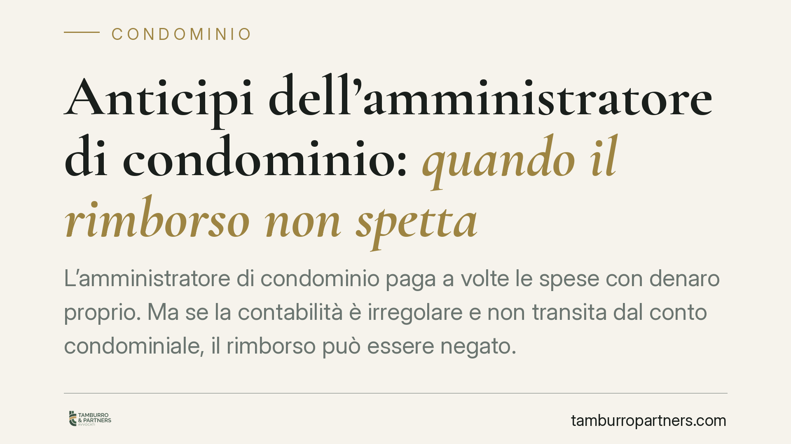

Anticipi dell'amministratore di condominio: quando il rimborso non spetta
L'amministratore di condominio paga a volte le spese con denaro proprio. Ma se la contabilità è irregolare e non transita dal conto condominiale, il rimborso può essere negato. Un orientamento della Cassazione ricorda che senza tracciabilità e rendiconto l'anticipo resta a carico di chi lo ha versato, con conseguenze anche gravi sul rapporto professionale.

Il caso
Accade spesso che un amministratore, per fronteggiare una scadenza urgente, paghi un fornitore del condominio con denaro proprio. L'operazione è lecita, ma il recupero di quanto anticipato non è automatico. Perché il rimborso sia dovuto occorre che la spesa risulti dalla contabilità condominiale e sia tracciata attraverso il conto corrente dedicato.
*Nota redazionale: la sentenza inizialmente segnalata (Cass. n. 4904/2026) non risulta ad oggi verificabile e va controllata negli estremi prima della pubblicazione definitiva. Nel testo facciamo quindi riferimento a un orientamento consolidato della Cassazione in materia.*
Inquadramento normativo
Il riferimento centrale è l'art. 1129 del Codice civile, che impone all'amministratore di far transitare tutte le somme ricevute e pagate per conto del condominio su uno specifico conto corrente, postale o bancario, intestato al condominio. La norma risponde a un'esigenza di trasparenza: ogni condomino deve poter verificare, attraverso quel conto, le movimentazioni della gestione.
Si aggiunge l'art. 1130-bis c.c., che disciplina il rendiconto condominiale. Il rendiconto deve contenere le voci di entrata e di uscita e ogni altro dato relativo alla situazione patrimoniale, ai fondi disponibili e alle eventuali riserve. In sostanza: una spesa che non emerge dalla contabilità e che non è passata dal conto dedicato è, per il condominio, un'operazione non documentata.
Secondo un orientamento costante della Cassazione, chi invoca un credito per anticipazioni deve provarne l'esistenza e l'inerenza alla gestione condominiale. L'onere della prova grava quindi sull'amministratore che chiede il rimborso, non sul condominio che lo contesta.
L'onere della prova e l'arricchimento senza causa
Il punto delicato è proprio probatorio. L'amministratore deve dimostrare due cose: che la spesa è stata effettivamente sostenuta e che era riferibile al condominio. Se il pagamento è avvenuto in contanti o da un conto personale, senza riscontro nel rendiconto, la prova diventa difficile e il credito può essere disconosciuto.
Resta teoricamente aperta la via dell'azione di arricchimento senza causa (art. 2041 c.c.), con cui chi ha sostenuto una spesa utile ad altri può chiedere un indennizzo. Si tratta però di un rimedio residuale e dai confini stretti: è ammesso solo quando manca ogni altra azione e richiede comunque la prova dell'arricchimento del condominio e del corrispondente depauperamento dell'amministratore. Non è una scorciatoia per sanare contabilità carenti.
Compenso professionale: una cautela
L'inadempimento degli obblighi contabili non incide solo sul rimborso. Secondo parte della giurisprudenza, nei casi più gravi la violazione sistematica degli obblighi di tenuta della contabilità e di rendicontazione può riflettersi anche sul diritto al compenso e, in ogni caso, integra giusta causa di revoca dell'amministratore ai sensi dell'art. 1129 c.c. È un'affermazione da maneggiare con prudenza: non ogni irregolarità comporta la perdita del compenso, ma la trasparenza contabile è condizione del corretto svolgimento dell'incarico.
Implicazioni pratiche
Per l'amministratore il messaggio è chiaro: anticipare denaro proprio senza tracciabilità è un rischio economico personale. Per i condomini, significa poter contestare spese non documentate e pretendere una contabilità verificabile.
Cosa fare in concreto
- Fai transitare ogni pagamento dal conto condominiale dedicato. Evita anticipi in contanti o da conti personali: se proprio inevitabili, documentali subito.
- Conserva ogni giustificativo. Fatture, bonifici e ricevute devono collegare la spesa al condominio e alla delibera o alla necessità di gestione.
- Annota tempestivamente l'anticipo nel rendiconto, indicando causale, importo e beneficiario, così da renderlo verificabile in assemblea.
- Chiedi, se possibile, un fondo cassa deliberato dall'assemblea per le spese urgenti, riducendo il ricorso a denaro proprio.
- In caso di contenzioso, raccogli la prova dell'inerenza della spesa prima di agire: consigliamo di valutare con un legale la fondatezza del credito e l'eventuale residuale azione ex art. 2041 c.c.
La regola di fondo è semplice: nel condominio ciò che non è tracciato e documentato, ai fini del rimborso, rischia di non esistere.
---
Contributo informativo a cura di Tamburro & Partners Avvocati - Avv. Giuseppe Tamburro. Non costituisce parere legale.
Ogni condominio ha una storia a sé.
Se gestisci un'amministrazione e vuoi un confronto su una specifica questione condominiale, scrivi allo studio. Ti rispondiamo entro un giorno lavorativo.